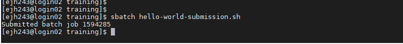
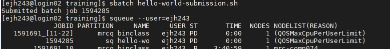

Running a job on a HPC system#
Learning Objectives#
Understand the role of a job scheduler in an HPC system
Learn how to submit a job to the cluster using the
sbatchcommandMonitor and track the status of submitted jobs using command-line tools
Identify common issues and troubleshoot errors in job submission
Explore different jobs queues and resource request for efficient job scheduling
Job Scheduler#
An HPC system might have thousands of nodes and thousands of users. How do we decide who gets what and when? How do we ensure that a task is run with the resources it needs? This job is handled by a special piece of software called the scheduler. On an HPC system, the scheduler manages which jobs run where and when. If you can relate to an instance where you had to wait for a while in a queue to get in to a popular restaurant, then you may now understand why sometimes your job do not start instantly as in your laptop.
The scheduler used on ISCA is Slurm. Although Slurm is not used everywhere, running jobs is quite similar regardless of what software is being used. The exact syntax might change, but the concepts remain the same.
Running a Batch Job#
The most basic use of the scheduler is to run a command non-interactively. Any command (or series of commands) that you want to run on the cluster is called a job, and the process of using a scheduler to run the job is called batch job submission.
In this case, the job we want to run is a shell script – essentially a text file containing a list of UNIX commands to be executed in a sequential manner. Our shell script hello-world.sh has the following parts:
On the very first line, #!/bin/sh. The #! (pronounced “hash-bang†or “shebang”) tells the computer what program is meant to process the contents of this file. In this case, we are telling it that the commands that follow are written for the command-line shell (what we’ve been doing everything in so far).
We then have a series of commands to print some information about our job
we use an
echocommand anddateto print the time and date that the script started running.we use
echoto print the hello world messageecho -nwill print everything that follows, without ending the line by printing the new-line character.we invoke the
hostnamecommand, which will print the name of the machine the script is run on.we finish using
echocommand anddateto print the time and date that the script finished running.
#!/bin/sh
## print start date and time
echo Job started on:
date -u
echo "hello-world"
## print node job run on
echo -n "This script is running on "
hostname
## print end date and time
echo Job ended on:
date -u
We can run this script on ISCA by executing sh hello-world.sh. What output does this give you?
We can see from the name of the computer that this script ran on the login node, but we want to take advantage of the compute nodes: we need the scheduler to queue up hello-world.sh to run on a compute node.
To submit this task to the scheduler, we use the sbatch command. We also need to give Slurm some instructions on how to run the job. Schedulers like Slurm also have a special comment used to denote special scheduler-specific options. Though these comments differ from scheduler to scheduler, Slurm’s special comment is #SBATCH. Anything following the #SBATCH comment is interpreted as an instruction to the scheduler.
An example job submission script for our hello world script is shown below.
#!/bin/sh
#SBATCH --export=ALL # export all environment variables to the batch job.
#SBATCH -p sq # submit to the serial queue
#SBATCH --time=00:10:00 # Maximum wall time for the job.
#SBATCH -A Research_Project-HPC-Training # research project to submit under.
#SBATCH --nodes=1 # specify number of nodes.
#SBATCH --ntasks-per-node=16 # specify number of processors per node
#SBATCH --mail-type=END # send email at job completion
#SBATCH --output=hello-world.o
#SBATCH --error=hello-world.e
#SBATCH --job-name=hello-world
## print start date and time
echo Job started on:
date -u
echo "hello-world"
## print node job run on
echo -n "This script is running on "
hostname
## print end date and time
echo Job ended on:
date -u
We submit this job by running sbatch hello-world-submission.sh. This creates a job which will run the script when dispatched to a compute node which the queuing system has identified as being available to perform the work. The output this time is different.

Rather than provide the output from the script, instead we get a message saying Submitted batch job followed by a number. This number is the job id and can be used to track the job.
Troubleshooting#
If you didn’t get this output then the job scheduler didn’t recognize your script as a job submission script. You might get an error message to help you debug why.
Common errors:
1. Incorrect line breaks. As shown in the figure below, a common error if you work on a unix machine is the incorrect End of line (EOL) characters.
As the job scheduler is running on UNIX system, it is expecting your script to be formatted with UNIX characters. If you were to open your script in a text editor you likely wouldn’t be able to see the problem, but the subtle difference between Windows (DOS) and UNIX in how the end of a line is coded causes an issue. It’s ok as there is an easy fix. If you open your script in notepad++ you can change the EOL coding to UNIX through the following menu sequence: “Edit†-> “EOL conversion†-> “Unix”. Then resave your script and resubmit.
2. Script not recognised as a job submission. You can’t submit your job to the queue if the scheduler does not recognise the commands in your script as instructions. In this case you will get the error shown in the figure below stating that the job submission has failed.
This means that either you did not include the SLURM commands or you did not include commands recognised by the scheduler running on the system you are using. Note that the error message refers to “No partition specified†this is just a alternative term for a queue on the system.
Tracking the job#
Once you see the “Job submitted†output you know that your job submission script has been accepted and the scheduler takes over and tries to run the job for us. This is important to note as it helps you debug any other errors you may or may not get. While the job is waiting to run, it goes into a list of jobs called the queue. To check on our job’s status, we check the queue using the command squeue -u <yourUsername>.

We can track our job in the output above, either by it’s name or job ID. We can see here that it’s currently being held in the queue (status = “PD”), once a resource becomes available this will change to an “R†to indicate that it is running. In this example, the job is being held in the queue, because the user already has their max allocation of jobs running on the system. In this case, the fair usage policy is preventing their job from running, rather than other users filling up the system. Now it’s possible that your script has been run before you get a chance to monitor it, you should however receive an e-mail telling you that your job has finished and whether it was COMPLETED (i.e. ran without error) or FAILED (terminated due to an error.)
If you recall, when we run our script on the login node, the output was printed to the terminal – but now, when squeue shows the job has finished, nothing was printed to the terminal.
When we submitted our job to the cluster we told it where to redirect the output. The relevant SLURM commands were
#SBATCH --output=hello-world.o
#SBATCH --error=hello-world.e
Let’s look at the content of those files - they should be located in the same folder as you launched the job from.
First hello-world.o
Job started on:
Tue Dec 13 20:04:32 UTC 2022
hello-world
This script is running on comp088
Job ended on:
Tue Dec 13 20:04:32 UTC 2022
This file contains all the standard output, i.e. the messages that would have been printed to the terminal.
Next hello-world.e
This file is empty. This files contains the standard error i.e. the error messages. Ours is empty as our job submission ran without error.
The default of the scheduler is to combine this output into a single file with the filename: slurm-%j.out, where %j is the job number. You can change the location of these files by specifying a path to where you want them (using either a relative or absolute path).
More troubleshooting#
If you successfully submitted your job to the queue but you can’t see it in the queue, chances are there is an error in the script and it was queued, started and hit and error before you could load the status of the queue. This should be confirmed by the arrival of an e-mail in you inbox where the job is stated as FAILED. Of course even if you can see it in the queue and it’s status is listed as R there is no guarantee that it will “complete”. When a job finishes prematurely or FAILs we need to try and work out why.
In this situation, the two output files are your main sources. Naively we might assume that the error output is the where the answer will be - and yes the error message can be found in that file. But often the error message passed to the processor can be written in unfamiliar terminology. You may find that the output file can help you identify where the script the error must have occurred, as you got some of the output you were expecting, or the function/command printed a more helpful and interpretable message prior to issues the error message to the error output. The content of both these files is sometimes needed to determine first, where in the script the error occured and second, what might have caused it.
Some common errors:
1. Incorrect filepath. This is likely to involve a statement somewhere like “File/directory XXX does not exist†or “Can’t find XXX†or “XXX not found”. This means you have incorrectly specified the location of the file/directory the programme is expecting to find or create. It means that you either are running the command from a different place that you thought, and hence a relative path is incorrect, or you have incorrectly specified the path to the file (maybe due to a typo). This can be confirmed with a simple ls <\path\to\where\you\thought\the\file\was>
2. Can’t find command X. AS well as finding the files and directorys, the compute node needs to be able to locate the programme or executable you want to run. You may get an error like, -bash: plink: command not found. This means that it could not find the programme “plink”. This could be because you haven’t loaded it into your environment. You’ve misspelt it (remember it is case sensitive), the file path is incorrect and it’s not available at one of the locations listed in echo $PATH or it’s file permissions are not set to run it as an executable. Assuming you own the execitable you can change the permissions with chmod a+x <path\to\executable>.
3. Run out of memory. With experience (and/or google) you may start to recognise that “OOM†stands for out of memory. Anything error with the work “Killed†in indicates that you asked too much of the compute resources you requested and to protect the rest of the system your job was shut down. Options here are to a) request more resource b) use the high memory nodes or c) restructure your analysis to reduce the memory load.
4. Exceeded walltime. If you job needed 10 hours and you only asked for 8 hours, it will run quite happily for the 8 hours and shortly after it will be killed by the scheduler. This is for two reasons, a) the wall time is an important part of how the scheduler decides which job to run next and b) it’s a protective measure to prevent broken, infinite jobs clogging the system up. Other jobs on the node will be unaffected. This means that one user cannot mess up the experience of others, the only jobs affected by a mistake in scheduling will be their own.
Queues#
Compute resources on ISCA are partitioned into different queues, which are designed to manage different types of job. As is common with many other HPC systems, there are separate queues depending if your job is a serial job (sq) or parallel job (pq). There are also test queues (stq and ptq), which are designed to provide rapid access to test and develop scripts. This is achieved by having a maximum wall time of 1 hour for jobs submitted to these queues. The high memory nodes are also accessed by submitting to a specific queue (highmem). This is similarly the case for the gpus (gpu). To submit your job to a different queue, you need to change the -p flag in your submission script.
There are also a number of other specialised queues which are reserved for specific projects. Your PI should be able to tell you if these are relevant for your project.
You can see a full list of all available queues and determine the status of the queues by running the command sinfo.
Resource Requests#
One thing that is absolutely critical when working on an HPC system is specifying the resources required to run a job. This allows the scheduler to find the right time and place to schedule our job. If you do not specify requirements (such as the amount of time you need), you will likely be stuck with your site’s default resources, which is probably not what you want.
The following are several key resource requests:
–ntasks=
–time days-hours:minutes:seconds or -t days-hours:minutes:seconds: How much real-world time (walltime) will your job take to run? The
–mem=
–nodes=
Note that just requesting these resources does not make your job run faster, nor does it necessarily mean that you will consume all of these resources. It only means that these are made available to you. Your job may end up using less memory, or less time, or fewer nodes than you have requested, and it will still run. It’s best if your requests accurately reflect your job’s requirements.
Resource requests are typically binding. If you exceed them, your job will be killed. Let’s use wall time as an example. We will request 1 minute of wall time, and attempt to run a job for two minutes.
#!/bin/sh
#SBATCH --export=ALL # export all environment variables to the batch job.
#SBATCH -p sq # submit to the serial queue
#SBATCH --time=00:01:00 # Maximum wall time for the job.
#SBATCH -A Research_Project-HPC-Training # research project to submit under.
#SBATCH --nodes=1 # specify number of nodes.
#SBATCH --ntasks-per-node=16 # specify number of processors per node
#SBATCH --mail-type=END # send email at job completion
#SBATCH --output=hello-world.o
#SBATCH --error=hello-world.e
#SBATCH --job-name=long-job
## print start date and time
echo Job started on:
date -u
echo "This script is running on ... "
sleep 240 # time in seconds
hostname
## print end date and time
echo Job ended on:
date -u
Submit the job and wait for it to finish. Once it is has finished, check the log file.
Cancelling a Job#
Sometimes we’ll make a mistake and need to cancel a job. This can be done with the scancel command. Let’s submit a job and then cancel it using its job number (remember to change the walltime so that it runs long enough for you to cancel it before it is killed!). A clean return of your command prompt indicates that the request to cancel the job was successful.
Other Types of Jobs#
Up to this point, we’ve focused on running jobs in batch mode. Slurm also provides the ability to start an interactive session.
There are very frequently tasks that need to be done interactively. Creating an entire job script might be overkill, but the amount of resources required is too much for a login node to handle.
srun --time=12:0:0 --nodes=1 --ntasks-per-node=16 -p sq -A Research_Project-HPC-Training --pty bash
We can then enter our commands as required for example running our hello-world.sh shell script.